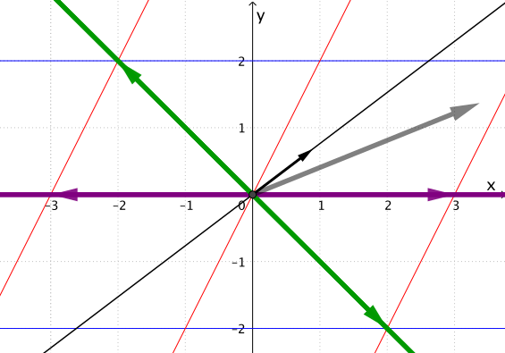
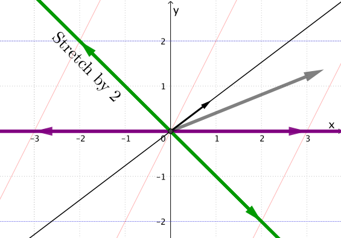
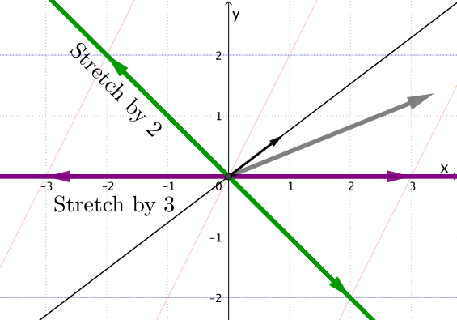
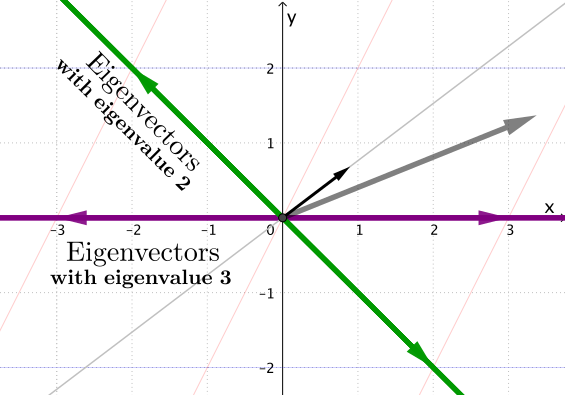

Linear Algebra & Applications
2201NSC
Eigenvalues & Eigenvectors
Eigenvalues & Eigenvectors - Motivation
Returning to the Marital Population Problem
Recall the problem: if 80% of the population is married, and in any given year:
- The probability a married person divorces is 30%
- The probability an unmarried person marries is 20%
What percentage of the population will be married in future years?
$ \begin{pmatrix} \% \text{ married next yr} \\ \% \text{ unmarried next yr} \end{pmatrix} = \begin{pmatrix} [\% \text{ married}] \times 0.7 + [\% \text{ unmarried}] \times 0.2 \\ [\% \text{ married}] \times 0.3 + [\% \text{ unmarried}] \times 0.8 \end{pmatrix} $
$\qquad \qquad = \begin{pmatrix} 0.7 & 0.2 \\ 0.3 & 0.8 \end{pmatrix} \begin{pmatrix} \% \text{ married} \\ \% \text{ unmarried} \end{pmatrix} $
$\mathbf{x}_{1} = A\mathbf{x}_{0}$ $\;\Ra\; \mathbf{x}_{n} = A^{n}\mathbf{x}_{0}$
Eigenvalues & Eigenvectors - Motivation
Initially, 80% of the population is married: $\mathbf{x}_{0} = \begin{pmatrix} 80 \\ 20 \end{pmatrix}$
After 1 year, we have:
$ \mathbf{x}_{1} = A\mathbf{x}_{0} $ $= \begin{pmatrix} 0.7 & 0.2 \\ 0.3 & 0.8 \end{pmatrix} \begin{pmatrix} 80 \\ 20 \end{pmatrix}$ $ = \begin{pmatrix} 60 \\ 40 \end{pmatrix} $
After 2 years, we have:
$ \mathbf{x}_{2} = A^{2}\mathbf{x}_{0} $ $= \begin{pmatrix} 0.7 & 0.2 \\ 0.3 & 0.8 \end{pmatrix}^{2} \begin{pmatrix} 80 \\ 20 \end{pmatrix}$ $ = \begin{pmatrix} 50 \\ 50 \end{pmatrix} $
After 10 years, we have:
$ \mathbf{x}_{10} = A^{10}\mathbf{x}_{0} $ $ = \begin{pmatrix} 0.7 & 0.2 \\ 0.3 & 0.8 \end{pmatrix}^{10} \begin{pmatrix} 80 \\ 20 \end{pmatrix}$ $ \approx \begin{pmatrix} 40 \\ 60 \end{pmatrix} $
Eigenvalues & Eigenvectors - Motivation
After 20 and 30 years, the state converges:
$$ \mathbf{x}_{20} = A^{20}\mathbf{x}_{0} \approx \color{red}{\begin{pmatrix} 40 \\ 60 \end{pmatrix}}, \quad \mathbf{x}_{30} = A^{30}\mathbf{x}_{0} \approx \color{red}{\begin{pmatrix} 40 \\ 60 \end{pmatrix}} $$If we start with a completely different initial population distribution, we head toward the exact same endpoint:
Therefore, $\begin{pmatrix} 40 \\ 60 \end{pmatrix}$ is a steady-state vector for this process — but why? 🤔
Eigenvalues & Eigenvectors - Motivation
Returning to the Sea Turtle Problem
Is it the same for the Loggerhead Sea Turtle stage-based population model?
$ \mathbf{x}_{25} = L^{25}\mathbf{x}_{0}$ $= \begin{pmatrix} 0 & 0 & 127 & 79 \\ 0.67 & 0.74 & 0 & 0 \\ 0 & 0.0006 & 0 & 0 \\ 0 & 0 & 0.81 & 0.81 \end{pmatrix}^{25} \begin{pmatrix} 200\,000 \\ 30\,000 \\ 5\,000 \\ 1\,500 \end{pmatrix}$ $\approx$ $ \begin{pmatrix} 67\,574 \\ 196\,492 \\ 123 \\ 630 \end{pmatrix} $
$ \mathbf{x}_{26} = L^{26}\mathbf{x}_{0} $ $ = \begin{pmatrix} 0 & 0 & 127 & 79 \\ 0.67 & 0.74 & 0 & 0 \\ 0 & 0.0006 & 0 & 0 \\ 0 & 0 & 0.81 & 0.81 \end{pmatrix}^{26} \begin{pmatrix} 200\,000 \\ 30\,000 \\ 5\,000 \\ 1\,500 \end{pmatrix} $ $\approx$ $ \begin{pmatrix} 65\,418 \\ 192\,159 \\ 119 \\ 610 \end{pmatrix} $
👉 $ \begin{pmatrix} 65\,418 \\ 192\,159 \\ 119 \\ 610 \end{pmatrix}$ $\approx 0.96809$ $ \begin{pmatrix} 67\,574 \\ 196\,492 \\ 123 \\ 630 \end{pmatrix} $
Instead of a fixed endpoint, the state vector is shrinking at a constant percentage rate!
Eigenvalues & Eigenvectors - Motivation
👉 $ \begin{pmatrix} 65\,418 \\ 192\,159 \\ 119 \\ 610 \end{pmatrix}$ $\approx 0.96809$ $ \begin{pmatrix} 67\,574 \\ 196\,492 \\ 123 \\ 630 \end{pmatrix} $
If we alter the initial population vector, we observe a structurally identical rate limit:
$ L^{25}\begin{pmatrix} 10\,000 \\ 10\,000 \\ 1\,000 \\ 1\,000 \end{pmatrix} $ $ \approx $ $\begin{pmatrix} 52\,726 \\ 154\,883 \\ 96 \\ 492 \end{pmatrix},\qquad$ $L^{26}\begin{pmatrix} 10\,000 \\ 10\,000 \\ 1\,000 \\ 1\,000 \end{pmatrix} $ $\approx$ $\begin{pmatrix} 51\,046 \\ 149\,941 \\ 93 \\ 476 \end{pmatrix} $
$ \begin{pmatrix} 51\,046 \\ 149\,941 \\ 93 \\ 476 \end{pmatrix} $ $ \approx 0.96809 $ $\begin{pmatrix} 52\,726 \\ 154\,883 \\ 96 \\ 492 \end{pmatrix}$ $ \;\; \approx\; 0.7803 $ $\begin{pmatrix} 65\,418 \\ 192\,159 \\ 119 \\ 610 \end{pmatrix} $
How can we mathematically explain these asymptotic behaviors? 🤔
Eigenvalues & Eigenvectors - Motivation
The state layout distributions $\mathbf{v}_1 = \begin{pmatrix} 40 \\ 60 \end{pmatrix}$ and $\mathbf{v}_2 = \begin{pmatrix} 67\,574 \\ 196\,492 \\ 123 \\ 630 \end{pmatrix}$ are highly unique:
$A\begin{pmatrix} 40 \\ 60 \end{pmatrix}$ $= \begin{pmatrix} 0.7 & 0.2 \\ 0.3 & 0.8 \end{pmatrix}\begin{pmatrix} 40 \\ 60 \end{pmatrix}$ $= 1 \cdot \begin{pmatrix} 40 \\ 60 \end{pmatrix}$
$L\begin{pmatrix} 67\,574 \\ 196\,492 \\ 123 \\ 630 \end{pmatrix} $ $= \begin{pmatrix} 0 & 0 & 127 & 79 \\ 0.67 & 0.74 & 0 & 0 \\ 0 & 0.0006 & 0 & 0 \\ 0 & 0 & 0.81 & 0.81 \end{pmatrix}\begin{pmatrix} 67\,574 \\ 196\,492 \\ 123 \\ 630 \end{pmatrix}$ $\approx 0.96809 \begin{pmatrix} 67\,574 \\ 196\,492 \\ 123 \\ 630 \end{pmatrix}$
Eigenvalues & Eigenvectors - Motivation
The state layout distributions $\mathbf{v}_1 = \begin{pmatrix} 40 \\ 60 \end{pmatrix}$ and $\mathbf{v}_2 = \begin{pmatrix} 67\,574 \\ 196\,492 \\ 123 \\ 630 \end{pmatrix}$ are highly unique:
$A\begin{pmatrix} 40 \\ 60 \end{pmatrix}$ $= \begin{pmatrix} 0.7 & 0.2 \\ 0.3 & 0.8 \end{pmatrix}\begin{pmatrix} 40 \\ 60 \end{pmatrix}$ $= 1 \cdot \begin{pmatrix} 40 \\ 60 \end{pmatrix}$
$L\begin{pmatrix} 67\,574 \\ 196\,492 \\ 123 \\ 630 \end{pmatrix} $ $= \begin{pmatrix} 0 & 0 & 127 & 79 \\ 0.67 & 0.74 & 0 & 0 \\ 0 & 0.0006 & 0 & 0 \\ 0 & 0 & 0.81 & 0.81 \end{pmatrix}\begin{pmatrix} 67\,574 \\ 196\,492 \\ 123 \\ 630 \end{pmatrix}$ $\approx 0.96809 \begin{pmatrix} 67\,574 \\ 196\,492 \\ 123 \\ 630 \end{pmatrix}$
These satisfy the fundamental characteristic equation structure: $ A\mathbf{v} = \lambda\mathbf{v} $
The non-zero directional vector $\mathbf{v}$ is an eigenvector, and the scalar multiplier $\lambda$ is its corresponding eigenvalue.
What are Eigenvalues and Eigenvectors?
They are fundamental intrinsic properties of square matrices that reveal stable structural states across engineering and science systems:
- Systems of differential equations & structural analysis
- Natural frequencies, acoustics, and mechanical resonance
- Quantum mechanics state space formulations
- Computer Vision (e.g., Eigenfaces for recognition algorithms)
- Google's PageRank web indexing systems
Geometrically, eigenvectors represent directions that are not rotated by the matrix transformation $A\mathbf{v}$. Instead, they are simply scaled, stretched, shrunk, or flipped.
The eigenvalue $\lambda$ quantifies this exact scaling magnitude and orientation shift.
Recall: Linear transformation
To begin, consider a linear transformation in two dimensions given by a matrix $A$.
Recall: Linear transformation
To begin, consider a linear transformation in two dimensions given by a matrix $A$.
Recall: Linear transformation
To begin, consider a linear transformation in two dimensions given by a matrix $A$.
Recall: Linear transformation
To begin, consider a linear transformation in two dimensions given by a matrix $A$.
Recall: Linear transformation
Considering the matrix $A = \left(\begin{matrix} 3 & 1 \\ 0 & 2 \end{matrix}\right). $





Eigenvalues and Eigenvectors
If $A $ is an $n\times n$ matrix, then $\v$ is an eigenvector if
$A \v $ $ = \lambda \v$
The scalar $\lambda$ is an eigenvalue of $A$, and we say that $\v$ is an eigenvector corresponding to $\lambda.$
Eigenvalues and Eigenvectors
Matrix-vector multiplication $\qquad \qquad$
| $\uparrow$ | ||
| $A\mathbf v $ | $ = $ | $\lambda \v$ |
| $ \downarrow$ |
$\qquad \qquad$ Scalar multiplication
Eigenvalues and Eigenvectors
$A \v = \lambda \v$
to make sense of this equation, consider the $3\times 3$ identity matrix:
$I = \left(\begin{array}{ccc} 1 & 0 & 0 \\ 0 & 1 & 0 \\ 0 & 0 & 1 \\ \end{array}\right) $
Eigenvalues and Eigenvectors
$A \v = \lambda \v$
Multiply by $\lambda$ to obtain:
$\lambda I = \left(\begin{array}{ccc} \lambda & 0 & 0 \\ 0 & \lambda & 0 \\ 0 & 0 & \lambda \\ \end{array}\right) $
Eigenvalues and Eigenvectors
$A \v =\left( \lambda I\right)\v$
$\lambda I = \left(\begin{array}{ccc} \lambda & 0 & 0 \\ 0 & \lambda & 0 \\ 0 & 0 & \lambda \\ \end{array}\right) $
Eigenvalues and Eigenvectors
$A \v =\left( \lambda I\right)\v$
$\Ra \,A \v -\left( \lambda I\right) \v=\mathbf 0$
$\Ra \,\left(A - \lambda I\right) \v=\mathbf 0$
Eigenvalues and Eigenvectors
$\underbrace{\left(A - \lambda I\right)}{} \v=\mathbf 0$
This matrix looks like $\qquad\qquad\qquad $
$ \left(\begin{array}{ccc} 3-\lambda & -1 & 2 \\ 2 & 5-\lambda & 4 \\ 1 & 3 & 5-\lambda \\ \end{array}\right) $$\qquad\qquad \qquad$
Eigenvalues and Eigenvectors
$\left(A - \lambda I\right) \v=\mathbf 0$
We want a nonzero vector $\v$ satisfying this equation.
For this, recall that
$ \text{det}\left(A - \lambda I\right) =0 $
Eigenvalues and Eigenvectors
$\left(A - \lambda I\right) \v=\mathbf 0$
$ \text{det}\left(A - \lambda I\right) =0 $
Example 1
Consider the matrix $A = \left(\begin{matrix} 3 & 1 \\ 0 & 2 \end{matrix}\right). $
First, to compute the eigenvalues $\lambda,$ we set the matrix
$A - \lambda I $ $ = \left(\begin{matrix} 3- \lambda & 1 \\ 0 & 2 -\lambda \end{matrix}\right). $
Then we compute the determinant
$ \text{det} \left(\begin{matrix} 3- \lambda & 1 \\ 0 & 2 -\lambda \end{matrix}\right) $ $ = \left(3- \lambda \right)\left(2- \lambda \right) $ $ = 0. $
Thus the eigenvalues are $\lambda =2$ and $\lambda = 3.$
Example 1
Consider the matrix $A = \left(\begin{matrix} 3 & 1 \\ 0 & 2 \end{matrix}\right). $
Thus the eigenvalues are $\lambda =2$ and $\lambda = 3.$
To figure out an eigenvector corresponging to the eigenvalue $\lambda =2,$ we plug in this value to the matrix
$ \left(\begin{matrix} 3- \lambda & 1 \\ 0 & 2 -\lambda \end{matrix}\right) $ $= \left(\begin{matrix} 3- 2 & 1 \\ 0 & 2 -2 \end{matrix}\right). $
Then we use our equation $\,\left(A-\lambda I\right)\v = \mathbf 0\,$ to obtain
$ \left(\begin{matrix} 3- 2 & 1 \\ 0 & 2 -2 \end{matrix}\right) \left(\begin{matrix} x \\ y \end{matrix}\right)= \left(\begin{matrix} 0 \\ 0 \end{matrix}\right). $
Example 1
Consider the matrix $A = \left(\begin{matrix} 3 & 1 \\ 0 & 2 \end{matrix}\right). $
$ \left(A-\lambda I\right)\v = \mathbf 0 \,\Ra\, \left(\begin{matrix} 3- 2 & 1 \\ 0 & 2 -2 \end{matrix}\right) \left(\begin{matrix} x \\ y \end{matrix}\right)= \left(\begin{matrix} 0 \\ 0 \end{matrix}\right) $
$ \; \; \Ra\, \left(\begin{matrix} 1 & 1 \\ 0 & 0 \end{matrix}\right) \left(\begin{matrix} x \\ y \end{matrix}\right)= \left(\begin{matrix} 0 \\ 0 \end{matrix}\right) $
$\Ra \left\{ \begin{array}{ccccc} x & +& y & = & 0\\ 0 x &+& 0 y & = & 0\\ \end{array} \right. $ $\;\;\Ra\;\; x = -y. $
Example 1
Consider the matrix $A = \left(\begin{matrix} 3 & 1 \\ 0 & 2 \end{matrix}\right). $
$\Ra \left\{ \begin{array}{ccccc} x & +& y & = & 0\\ 0 x &+& 0 y & = & 0\\ \end{array} \right. $ $\;\;\Ra\;\; x = -y. $
Thus $\, \v $ $= \left(\begin{matrix} x \\ y \end{matrix}\right) $ $= \left(\begin{matrix} -y \\ y \end{matrix}\right) $ $=y \left(\begin{matrix} -1 \\ 1 \end{matrix}\right),\; $ $ (y \text{ is a scalar}). $
Hence an eigenvector corresponding to $\lambda =2\,$ is $\, \left(\begin{matrix} -1 \\ 1 \end{matrix}\right). $
Example 1
Consider the matrix $A = \left(\begin{matrix} 3 & 1 \\ 0 & 2 \end{matrix}\right). $
Now to compute an eigenvector corresponging to the eigenvalue $\lambda =3,$ we plug in this value to the matrix
$ \left(\begin{matrix} 3- \lambda & 1 \\ 0 & 2 -\lambda \end{matrix}\right) $ $= \left(\begin{matrix} 3- 3 & 1 \\ 0 & 2 -3 \end{matrix}\right). $
Again we use our equation $\,\left(A-\lambda I\right)\v = \mathbf 0\,$ to obtain
$ \left(\begin{matrix} 3- 3 & 1 \\ 0 & 2 -3 \end{matrix}\right) \left(\begin{matrix} x \\ y \end{matrix}\right)= \left(\begin{matrix} 0 \\ 0 \end{matrix}\right). $
Example 1
Consider the matrix $A = \left(\begin{matrix} 3 & 1 \\ 0 & 2 \end{matrix}\right). $
$ \left(A-\lambda I\right)\v = \mathbf 0 \,\Ra\, \left(\begin{matrix} 3- 3 & 1 \\ 0 & 2 -3 \end{matrix}\right) \left(\begin{matrix} x \\ y \end{matrix}\right)= \left(\begin{matrix} 0 \\ 0 \end{matrix}\right). $
$ \,\Ra\, \left(\begin{matrix} 0 & 1 \\ 0 & -1 \end{matrix}\right) \left(\begin{matrix} x \\ y \end{matrix}\right)= \left(\begin{matrix} 0 \\ 0 \end{matrix}\right) $
$\Ra \left\{ \begin{array}{ccccc} 0x & +& y & = & 0\\ 0x &-& y & = & 0\\ \end{array} \right. $ $\;\Ra y = 0\, $ & $\,x$ is a free variable.
Example 1
Consider the matrix $A = \left(\begin{matrix} 3 & 1 \\ 0 & 2 \end{matrix}\right). $
$\Ra \left\{ \begin{array}{ccccc} 0x & +& y & = & 0\\ 0x &-& y & = & 0\\ \end{array} \right. $ $\;\Ra y = 0\, $ & $\,x$ is a free variable.
Thus $\, \v $ $= \left(\begin{matrix} x \\ y \end{matrix}\right) $ $= \left(\begin{matrix} x \\ 0 \end{matrix}\right) $ $=x \left(\begin{matrix} 1 \\ 0 \end{matrix}\right),\; $ $ (x \text{ is a scalar}). $
Hence an eigenvector corresponding to $\lambda =3\,$ is $\, \left(\begin{matrix} 1 \\ 0 \end{matrix}\right). $
Example 1 - Two eigenvalues
Consider the matrix $A = \left(\begin{matrix} 3 & 1 \\ 0 & 2 \end{matrix}\right). $
In summary
|
Key Structural Observations
- Row Reduction: While full Gaussian elimination works cleanly, $2 \times 2$ systems can typically be evaluated by inspection since the rows are linearly dependent by construction.
- Non-Uniqueness: Eigenvectors identify an infinite line or directional span. Any scaled non-zero scalar value along that vector trajectory remains a valid structural eigenvector.
- Matrix Invariant Checks: For any square matrix $A$:
- $\ds \sum \lambda_i = \text{trace}(A) $ (Sum of principal diagonals)
- $\ds \prod \lambda_i = \det(A)$ (Matrix determinant calculation)
From Example 1: $\sum \lambda = 3+2=5$ (Trace = $3+2=5$). $\prod \lambda = 3 \times 2 = 6$ ($\det = 6 - 0 = 6$).
Eigenvalue Theorem for $2 \times 2$ Matrices
Theorem: The eigenvalues of any arbitrary $2 \times 2$ matrix are found explicitly
via:
$$ \lambda^2 - \text{trace}(A)\lambda + \det(A) = 0. $$
Proof Outline: Let $A = \begin{pmatrix} a_{11} & a_{12} \\ a_{21} & a_{22} \end{pmatrix}$. Then
$ \det(A - \lambda I) = \begin{vmatrix} a_{11}-\lambda & a_{12} \\ a_{21} & a_{22}-\lambda \end{vmatrix} $ $ = (a_{11}-\lambda)(a_{22}-\lambda) - a_{12}a_{21} $
$ = \lambda^2 - (a_{11} + a_{22})\lambda + (a_{11}a_{22} - a_{12}a_{21}) $
$ = \lambda^2 - \text{trace}(A)\lambda + \det(A) $ $ = 0 \;\qquad \blacksquare $
Factoring the Characteristic System
Corollary: If $\lambda_1, \lambda_2$ represent the true root solutions to matrix $A$, then their polynomial product equation yields:
$(\lambda - \lambda_1)(\lambda - \lambda_2)=0$ $\implies \lambda^2 - (\lambda_1 + \lambda_2)\lambda + \lambda_1\lambda_2 = 0 $
Equating coefficients directly with the primary theorem equation:
$$ \lambda^2 - \text{trace}(A)\lambda + \det(A) = 0 $$This relationship generalizes across all larger $n \times n$ polynomial expansions.
Example 2 - Complex eigenvalues
Find the eigenvalues and corresponding eigenvectors for $A = \begin{pmatrix} 0 & -1 \\ 1 & 0 \end{pmatrix}$.
$\det(A - \lambda I) = \begin{vmatrix} -\lambda & -1 \\ 1 & -\lambda \end{vmatrix} $ $ = \lambda^2 + 1 $ $ = 0 \implies \lambda = \pm i $
A real matrix can yield complex conjugate eigenvalues!
For $\lambda_1 = i$: $\;(A - iI)\mathbf{v} = \begin{pmatrix} -i & -1 \\ 1 & -i \end{pmatrix}\begin{pmatrix} v_1 \\ v_2 \end{pmatrix} = \begin{pmatrix} 0 \\ 0 \end{pmatrix}$ $\Ra -iv_1 - v_2 = 0 $ $ \Ra v_2 = -iv_1 $
Setting free variable $v_1 = r$ gives:
$ \mathbf{v} = \begin{pmatrix} v_1 \\ v_2 \end{pmatrix} $ $= \begin{pmatrix} r \\ -ri \end{pmatrix} $ $ = r\begin{pmatrix} 1 \\ -i \end{pmatrix} $
Example 2 - Complex eigenvalues
Find the eigenvalues and corresponding eigenvectors for $A = \begin{pmatrix} 0 & -1 \\ 1 & 0 \end{pmatrix}$.
$\det(A - \lambda I) = \begin{vmatrix} -\lambda & -1 \\ 1 & -\lambda \end{vmatrix} $ $ = \lambda^2 + 1 $ $ = 0 \implies \lambda = \pm i $
A real matrix can yield complex conjugate eigenvalues!
The eigenvectors associated to $\lambda_1 = i\,$ are \(\,\mathbf{v}_1 = r\begin{pmatrix} 1 \\ -i \end{pmatrix}.\)
The eigenvectors associated to $\lambda_2 = -i\,$ are \(\mathbf{v}_2 = s\begin{pmatrix} -i \\ 1 \end{pmatrix}.\)
Example 2 - Complex eigenvalues
Question: Why does this real matrix have complex roots? 🤔
$$A = \begin{pmatrix} 0 & -1 \\ 1 & 0 \end{pmatrix}$$
Answer: This matrix matches the structure of a standard 2D rotation matrix:
Because a pure $90^{\circ}$ rotation changes the direction of every non-zero vector in the real plane, no real steady-state directional vector can exist!
Conjugate Pair Property: For any real matrix, complex eigenvalues must appear as conjugate pairs $a \pm bi$. This ensures that when factoring the characteristic equation $(x - \lambda_1)(x - \lambda_2) = 0$, all polynomial coefficients remain completely real.
Example 3 - A single eigenvalue
Find the eigenvalues and eigenvectors for $A = \begin{pmatrix} 1 & 1 \\ 0 & 1 \end{pmatrix}$.
$ \det(A - \lambda I) = \begin{vmatrix} 1-\lambda & 1 \\ 0 & 1-\lambda \end{vmatrix} = $ $ (1-\lambda)^2 = 0$ $ \Ra \lambda = 1 \;\;$ (Algebraic Multiplicity = 2)
For $\lambda = 1$: $ \;(A - 1I)\mathbf{v} = \begin{pmatrix} 0 & 1 \\ 0 & 0 \end{pmatrix}\begin{pmatrix} v_1 \\ v_2 \end{pmatrix} = \begin{pmatrix} 0 \\ 0 \end{pmatrix} $ $ \Ra v_2 = 0 $
Setting the single free parameter $v_1 = r$ yields: $\, \mathbf{v} = \begin{pmatrix} r \\ 0 \end{pmatrix} $ $= r\begin{pmatrix} 1 \\ 0 \end{pmatrix} $
In this case, there is only one linearly independent eigenvector! This occurs because $A$ is a shear transformation (it skews the coordinate grid horizontally), leaving only a single stable invariant direction along the $x$-axis.
Example 4 - $3 \times 3$ Matrix System
Take the matrix $A = \begin{pmatrix} 1 & 0 & 2 \\ 0 & 2 & 1 \\ 3 & 0 & 2 \end{pmatrix} $
Expand the determinant along the second column to exploit the zero entry:
$ \det(A - \lambda I) = \begin{vmatrix} 1-\lambda & 0 & 2 \\ 0 & 2-\lambda & 1 \\ 3 & 0 & 2-\lambda \end{vmatrix}$ $ = (2-\lambda) \begin{vmatrix} 1-\lambda & 2 \\ 3 & 2-\lambda \end{vmatrix} \qquad\qquad $
$= (2-\lambda)\left[(1-\lambda)(2-\lambda) - 6\right]$ $= (2-\lambda)\left[\lambda^2 - 3\lambda - 4\right]$
$ = (2-\lambda)(\lambda + 1)(\lambda - 4) = 0 \qquad\qquad\qquad\qquad\;\,\, $
Eigenvalue solutions: $\lambda_1 = 2,\;$ $\lambda_2 = -1,\;$ $\lambda_3 = 4$
Example 4 - $3 \times 3$ Matrix System
For $\lambda_1 = 2$: $ \;\begin{pmatrix} -1 & 0 & 2 \\ 0 & 0 & 1 \\ 3 & 0 & 0 \end{pmatrix}\begin{pmatrix} v_1 \\ v_2 \\ v_3 \end{pmatrix} = \mathbf{0} $ $ \,\Ra\, v_1=0,\, v_3=0, \,v_2=r$ $ \,\Ra\, \mathbf{v}_1 = r\begin{pmatrix} 0 \\ 1 \\ 0 \end{pmatrix} $
For $\lambda_2 = -1$: $ \; \begin{pmatrix} 2 & 0 & 2 \\ 0 & 3 & 1 \\ 3 & 0 & 3 \end{pmatrix}\begin{pmatrix} v_1 \\ v_2 \\ v_3 \end{pmatrix} = \mathbf{0}$ $\, \Ra\, v_1 = -v_3,\, v_2 = -\dfrac{1}{3}v_3 $ $ \,\Ra\, \mathbf{v}_2 = \dfrac{t}{3}\begin{pmatrix} -3 \\ -1 \\ 3\end{pmatrix} $
For $\lambda_3 = 4$: $ \; \begin{pmatrix} -3 & 0 & 2 \\ 0 & -2 & 1 \\ 3 & 0 & -2 \end{pmatrix}\begin{pmatrix} v_1 \\ v_2 \\ v_3 \end{pmatrix} = \mathbf{0} $ $ \,\Ra\, v_1 = \dfrac{2}{3}v_3,\, v_2 = \dfrac{1}{2}v_3$ $ \,\Ra\, \mathbf{v}_3 = \dfrac{s}{6}\begin{pmatrix} 4 \\ 3 \\ 6 \end{pmatrix}$
The order of the characteristic equation
$2\times 2$ matrices imply $\det(A-\lambda I )=0$ is a quadratic equation
$3\times 3$ matrices imply $\det(A-\lambda I )=0$ is a cubic equation
$\vdots$
$n\times n$ matrices imply $\det(A-\lambda I )=0$ is an equation of degree $n$

Eigenvalues of Triangular Matrices
The eigenvalues of any triangular (upper or lower) or diagonal matrix are precisely the entry values sitting directly on the main diagonal.
Consider $ A = \begin{pmatrix} 4 & 4 & 6 \\ 0 & 2 & 7 \\ 0 & 0 & 1 \end{pmatrix} $ $\implies \lambda_1 = 4, \;\; \lambda_2 = 2, \;\; \lambda_3 = 1$
Why does this hold? 🤔
When computing the characteristic determinant of a triangular system: $$ \det(A - \lambda I) = \begin{vmatrix} 4-\lambda & 4 & 6 \\ 0 & 2-\lambda & 7 \\ 0 & 0 & 1-\lambda \end{vmatrix} $$
Cofactor expansion along the first column shows the determinant is just the product of diagonal elements: $(4-\lambda)(2-\lambda)(1-\lambda) = 0$.
Example 5: Finding eigenvalues & eigenvectors using the computer 💻
Eigenvalues and eigenvectors can be computed quickly using many programming languages and mathematical software packages.
Python, Mathematica, MATLAB/Octave,
GeoGebra CAS, Maple, Julia, etc.

There are also many free online calculators that can compute
them automatically
👉 just Google "eigenvalues/eigenvectors calculator".
Example 5: Finding eigenvalues & eigenvectors using the computer 💻
MATLAB/Octave has efficient algorithms for finding eigenvalues and eigenvectors.
1. Construct the matrix $A$, e.g. A = [1 0 0; 0 2 1; 0 1 2]
2. Use the command eig as follows: [V, D] = eig(A)
Interpretation:
- D = diagonal matrix containing the eigenvalues of $A$.
- V = matrix whose columns are the eigenvectors of $A$, where each column has been normalised, and the order of the eigenvectors matches the order of the eigenvalues.
NOTE!! The eigenvectors found by Matlab/Octave are normalised (i.e. length=1), which is ok since eigenvectors are not unique. So the eigenvectors found by MATLAB/Octave may not appear to agree with your hand-calculations at first glance.
Example 5: Finding eigenvalues & eigenvectors using the computer 💻
$ A = \begin{pmatrix} 1 & 0 & 0 \\ 0 & 2 & 1 \\ 0 & 1 & 2 \end{pmatrix} $ $\Ra\det(A - \lambda I) = (1-\lambda)\left[(2-\lambda)^{2}-1\right] $ $ = (1-\lambda)(\lambda-3)(\lambda-1) $ $= 0 $
This yields our eigenvalues: $\lambda_1 = 3$ and a repeated root $\lambda_2 = 1$ (Algebraic Multiplicity = 2).
For $\lambda_1 = 3$: $ \begin{pmatrix} -2 & 0 & 0 \\ 0 & -1 & 1 \\ 0 & 1 & -1 \end{pmatrix}\begin{pmatrix} v_1 \\ v_2 \\ v_3 \end{pmatrix} = \begin{pmatrix} 0 \\ 0 \\ 0 \end{pmatrix}$ $ \implies v_1 = 0, \; v_2 = v_3 $ $\implies \mathbf{v}_1 = s\begin{pmatrix} 0 \\ 1 \\ 1 \end{pmatrix} $
For $\lambda_2 = 1$: $ \begin{pmatrix} 0 & 0 & 0 \\ 0 & 1 & 1 \\ 0 & 1 & 1 \end{pmatrix}\begin{pmatrix} v_1 \\ v_2 \\ v_3 \end{pmatrix} = \begin{pmatrix} 0 \\ 0 \\ 0 \end{pmatrix}$ $ \implies v_2 + v_3 = 0 $ $ \implies v_2 = -v_3 $
Setting free parameters $\,v_1 = r\,$ and $\,v_3 = t,\,$ implies $ \,\mathbf{v}_2 = \begin{pmatrix} r \\ -t \\ t \end{pmatrix}$ $ = r\begin{pmatrix} 1 \\ 0 \\ 0 \end{pmatrix} + t\begin{pmatrix} 0 \\ -1 \\ 1 \end{pmatrix} $
Example 5: Finding eigenvalues & eigenvectors using the computer 💻
$ A = \begin{pmatrix} 1 & 0 & 0 \\ 0 & 2 & 1 \\ 0 & 1 & 2 \end{pmatrix}\;\Ra\; $ $\boxed{\lambda_1 =3,\, \mathbf{v}_1 = s\begin{pmatrix} 0 \\ 1 \\ 1 \end{pmatrix}}\,$ and $\,\boxed{\lambda_2 =1,\, \mathbf{v}_2 = r\begin{pmatrix} 1 \\ 0 \\ 0 \end{pmatrix} + t\begin{pmatrix} 0 \\ -1 \\ 1 \end{pmatrix}}$
MATLAB/Octave
>> [V, D] = eig([1 0 0; 0 2 1; 0 1 2])
Output
V = 1.0000 0 0
0 -0.7071 0.7071
0 0.7071 0.7071
D = 1 0 0
0 1 0
0 0 3
Example 5: Finding eigenvalues & eigenvectors using the computer 💻
$ A = \begin{pmatrix} 1 & 0 & 0 \\ 0 & 2 & 1 \\ 0 & 1 & 2 \end{pmatrix}\;\Ra\; $ $\boxed{\lambda_1 =3,\, \mathbf{v}_1 = s\begin{pmatrix} 0 \\ 1 \\ 1 \end{pmatrix}}\,$ and $\,\boxed{\lambda_2 =1,\, \mathbf{v}_2 = r\begin{pmatrix} 1 \\ 0 \\ 0 \end{pmatrix} + t\begin{pmatrix} 0 \\ -1 \\ 1 \end{pmatrix}}$
Output
V = 1.0000 0 0
0 -0.7071 0.7071
0 0.7071 0.7071
D = 1 0 0
0 1 0
0 0 3
| \(\underbrace{\lambda_1=3}_{\text{3rd col. of D}}\): $\; \underbrace{\begin{pmatrix} 0 \\ 0.7071 \\ 0.7071 \end{pmatrix}}_{\text{3rd col. of V}} $ $=\dfrac{1}{\sqrt{0^2+1^2+1^2}}\begin{pmatrix} 0 \\ 1 \\ 1 \end{pmatrix}$ | \(\underbrace{\lambda_2=1}_{\text{1st & 2nd}\newline \text{cols. of D}}\): $\; \underbrace{\begin{pmatrix} 1 \\ 0 \\ 0 \end{pmatrix}\,\text{and}\,\begin{pmatrix} 0 \\ -0.7071 \\ 0.7071 \end{pmatrix}}_{\text{1st & 2nd cols. of V}} $ |
Note: Repeated eigenvalues appear frequently in physical scenarios that feature structural symmetry.
Example 6 - Sea Turtle MATLAB/Octave Outputs 💻
Recall our Leslie matrix defined earlier as $$L = \begin{pmatrix} 0 & 0 & 127 & 79 \\ 0.67 & 0.74 & 0 & 0 \\ 0 & 0.0006 & 0 & 0 \\ 0 & 0 & 0.81 & 0.81 \end{pmatrix}$$
>> [V, D] = eig([0 0 127 79; 0.67 0.74 0 0; 0 0.0006 0 0; 0 0 0.81 0.81])
Example 6 - Sea Turtle MATLAB/Octave Outputs 💻
>> [V, D] = eig([0 0 127 79; 0.67 0.74 0 0; 0 0.0006 0 0; 0 0 0.81 0.81])
Evaluating the stage-based Loggerhead Sea Turtle population matrix $L$ yields:
V = -0.7468 + 0i -0.7468 - 0i -0.2481 + 0i 0.3223 + 0i
0.6482 + 0.1489i 0.6482 - 0.1489i 0.9687 + 0i 0.9466 + 0i
0.0006 - 0.0023i 0.0006 + 0.0023i 0.0010 + 0i 0.0006 + 0i
-0.0011 + 0.0021i -0.0011 - 0.0021i -0.0034 + 0i 0.0030 + 0i
D = 0.0067 + 0.1684i 0 0 0
0 0.0067 - 0.1684i 0 0
0 0 0.5684 + 0i 0
0 0 0 0.9681 + 0i
The dominant long-term eigenvalue is $\lambda_4 = 0.9681$, with corresponding eigenvector:
$\qquad \qquad \mathbf v_4 = \begin{pmatrix}0.3223 \\ 0.9466 \\ 0.0006 \\ 0.003 \end{pmatrix}\quad $ (4th col. of matrix V)
Example 6 - Sea Turtle MATLAB/Octave Outputs 💻
V = -0.7468 + 0i -0.7468 - 0i -0.2481 + 0i 0.3223 + 0i
0.6482 + 0.1489i 0.6482 - 0.1489i 0.9687 + 0i 0.9466 + 0i
0.0006 - 0.0023i 0.0006 + 0.0023i 0.0010 + 0i 0.0006 + 0i
-0.0011 + 0.0021i -0.0011 - 0.0021i -0.0034 + 0i 0.0030 + 0i
D = 0.0067 + 0.1684i 0 0 0
0 0.0067 - 0.1684i 0 0
0 0 0.5684 + 0i 0
0 0 0 0.9681 + 0i
The dominant long-term eigenvalue is $\lambda_4 = 0.9681$, with corresponding eigenvector:
$\qquad \qquad \mathbf v_4 = \begin{pmatrix}0.3223 \\ 0.9466 \\ 0.0006 \\ 0.003 \end{pmatrix}\quad $ (4th col. of matrix V)
Our historical iterations align perfectly as pure scalar multiples of this stable state:
$ \mathbf{x}_{26,\text{ init}_1} \approx 202\,991\mathbf{v}_4, $ $\qquad \mathbf{x}_{26,\text{ init}_2} \approx 158\,394\mathbf{v}_4 $
Summary of Eigenvalue & Eigenvector Calculations
- For an $n \times n$ matrix $A$, we discover eigenvalues by solving the $n$-th degree characteristic polynomial equation: $ \det(A - \lambda I) = 0 .$
- This polynomial yields exactly $n$ total roots (accounting for repeated values and complex conjugate pairs $a \pm bi$).
- When repeated roots occur, the matrix may produce fewer than $n$ linearly independent eigenvectors (Example 4), though it can still yield a full set (Example 6).
- Securing $n$ completely independent eigenvectors is a required property for several advanced engineering applications (e.g., matrix diagonalization).
Bases and Linear Independence
Return of the Marital Population Problem
Let's re-examine our transition matrix transformations using two specific vectors:
| $\begin{pmatrix} 0.7 & 0.2 \\ 0.3 & 0.8 \end{pmatrix} $ $\begin{pmatrix} 2 \\ 3 \end{pmatrix} $ $= \begin{pmatrix} 2 \\ 3 \end{pmatrix}$ | $\begin{pmatrix} 0.7 & 0.2 \\ 0.3 & 0.8 \end{pmatrix}\begin{pmatrix} -1 \\ 1 \end{pmatrix} $ $= \begin{pmatrix} -0.5 \\ 0.5 \end{pmatrix}$ $= \dfrac{1}{2}\begin{pmatrix} -1 \\ 1 \end{pmatrix}$ |
| $\lambda_1 = 1, \; \mathbf{v}_1 = \begin{pmatrix} 2 \\ 3 \end{pmatrix}$ | $\lambda_2 = \frac{1}{2}, \; \mathbf{v}_2 = \begin{pmatrix} -1 \\ 1 \end{pmatrix}$ |
If we express an arbitrary vector $\mathbf{x}$ as a linear combination $\mathbf{x} = c_1\mathbf{v}_1 + c_2\mathbf{v}_2$, then applying the matrix transformation yields:
$ A\mathbf{x} = A(c_1\mathbf{v}_1 + c_2\mathbf{v}_2) = c_1(A\mathbf{v}_1) + c_2(A\mathbf{v}_2) $
$ = c_1\lambda_1\mathbf{v}_1 + c_2\lambda_2\mathbf{v}_2$ $= c_1\mathbf{v}_1 + \dfrac{c_2}{2}\mathbf{v}_2 $
This mirrors the Matrix Representation Theorem
$\rightarrow T(\mathbf x) = x_1 T(\mathbf e_1)+x_2 T(\mathbf e_2)+\cdots + x_n T(\mathbf
e_n)$
but uses intrinsic structural eigenvectors $\mathbf{v}_i$
rather than the standard coordinate basis
$\mathbf{e}_i$.
Bases and Linear Independence
Power and Utility of Eigenvector Representations
This formulation provides an exceptional advantage when computing high-power matrix operations:
$ A^2\mathbf{v}_i $ $ = A(A\mathbf{v}_i) $ $ = A(\lambda_i\mathbf{v}_i) $ $ = \lambda_i(A\mathbf{v}_i) $ $ = \lambda_i^2\mathbf{v}_i $ $ \Ra A^n\mathbf{v}_i = \lambda_i^n\mathbf{v}_i $
Applying this straight to the marital population system over $n$ intervals:
$\mathbf x_n =A^n\mathbf{x}_0 $ $ = A^n(c_1\mathbf{v}_1 + c_2\mathbf{v}_2) $ $ = c_1\lambda_1^n\mathbf{v}_1 + c_2\lambda_2^n\mathbf{v}_2 \qquad $
$\qquad \;\;\; = c_1(1)^n\mathbf{v}_1 + c_2\left(\dfrac{1}{2}\right)^n\mathbf{v}_2 $ $= c_1\mathbf{v}_1 + \dfrac{c_2}{2^n}\mathbf{v}_2$
As $n \rightarrow \infty$, the coefficient $\dfrac{c_2}{2^n} \rightarrow 0$. Leaving the steady state: $ \mathbf{x}_n \rightarrow c_1\mathbf{v}_1 = c_1\begin{pmatrix} 2 \\ 3 \end{pmatrix} $
Bases and Linear Independence
Formal Definition of a Basis
Definition: A set of vectors $\{\mathbf{v}_1, \mathbf{v}_2, \dots, \mathbf{v}_n\}$ forms a basis for the vector space $\mathbb{R}^m$ if and only if every vector $\mathbf{x} \in \mathbb{R}^m$ can be uniquely expressed as a linear combination of those vectors.
This means that for any arbitrary vector $\mathbf{x}$, a unique coefficient vector $\mathbf{c}$ must exist such that:
$ \mathbf{x} = c_1\mathbf{v}_1 + c_2\mathbf{v}_2 + \dots + c_n\mathbf{v}_n$ $ = \begin{pmatrix} | & | & & | \\ \mathbf{v}_1 & \mathbf{v}_2 & \dots & \mathbf{v}_n \\ | & | & & | \end{pmatrix} \begin{pmatrix} c_1 \\ c_2 \\ \vdots \\ c_n \end{pmatrix} $ $ = V\mathbf{c} $
Evaluating Systems with Excess Vectors
Do the following 4 vectors form a valid basis for the 3D space $\mathbb{R}^3$?
$$ \begin{pmatrix} 1 \\ 2 \\ 4 \end{pmatrix}, \; \begin{pmatrix} 2 \\ 1 \\ 3 \end{pmatrix}, \; \begin{pmatrix} 3 \\ 1 \\ 2 \end{pmatrix}, \; \begin{pmatrix} 4 \\ 0 \\ 1 \end{pmatrix} $$Constructing the augmented system matrix and calculating its row reduced echelon form (RREF):
$$ \left(\begin{array}{cccc|c} 1 & 2 & 3 & 4 & x \\ 2 & 1 & 1 & 0 & y \\ 4 & 3 & 2 & 1 & z \end{array}\right) \;\longrightarrow\; \left(\begin{array}{cccc|c} 1 & 0 & 0 & -1 & x' \\ 0 & 1 & 0 & 1 & y' \\ 0 & 0 & 1 & 1 & z' \end{array}\right) $$The answer to this questions is NO. Because there are fewer rows than columns, the system contains free variables. This creates infinite solution sets rather than a single unique vector transformation.
A basis cannot contain more vectors than the dimension of the target space.
Evaluating Systems with Insufficient Vectors
Can the following 2 vectors form a valid basis for the 3D space $\mathbb{R}^3$?
$$ \begin{pmatrix} 1 \\ 2 \\ 4 \end{pmatrix}, \;\; \begin{pmatrix} 2 \\ 1 \\ 3 \end{pmatrix} $$Constructing the system layout and performing row operations:
$$ \left(\begin{array}{cc|c} 1 & 2 & x \\ 2 & 1 & y \\ 4 & 3 & z \end{array}\right) \;\longrightarrow\; \left(\begin{array}{cc|c} 1 & 0 & x'' \\ 0 & 1 & y'' \\ 0 & 0 & z'' \end{array}\right) $$- Whenever there are fewer columns than rows, zeroed rows appear at the bottom of the coefficient matrix.
- For many target configurations (e.g., standard vector $\mathbf{e}_3$), no valid coordinate solutions exist.
A basis cannot contain fewer vectors than the dimension of the target space.
Dimensional Constraints for a Basis
To establish a valid basis within an $n$-dimensional space $\mathbb{R}^n$, the set must contain exactly $n$ vectors.
Fewer than $n$ Vectors
You might successfully map specific subspace paths, but you are mathematically blocked from reaching the rest of the target domain space.
More than $n$ Vectors
You might cover the structural space, but you introduce linear dependencies, which destroys coordinate uniqueness.
The Linear Independence Requirement
Does containing exactly $n$ vectors guarantee the formation of a valid basis for $\mathbb{R}^n$?
Consider these 3 vectors in $\mathbb{R}^3$: $$ \mathbf{v}_1 = \begin{pmatrix} 1 \\ 2 \\ 4 \end{pmatrix}, \; \mathbf{v}_2 = \begin{pmatrix} 2 \\ 1 \\ 3 \end{pmatrix}, \; \mathbf{v}_3 = \begin{pmatrix} 1 \\ -1 \\ -1 \end{pmatrix} $$
Grouping these into a matrix format results in a singular determinant: $$ \det(V) = \begin{vmatrix} 1 & 2 & 1 \\ 2 & 1 & -1 \\ 4 & 3 & -1 \end{vmatrix} = 0 $$
Hence, $\mathbf v_k$ is a linear combination of the others. So, there is no unique $\mathbf c$ such that $V\mathbf c = \mathbf x$
Formalizing Linear Independence
Definition: A collection of vectors $\{\mathbf{v}_1, \mathbf{v}_2, \dots, \mathbf{v}_n\}$ is linearly independent if and only if the vector equation: $$ c_1\mathbf{v}_1 + c_2\mathbf{v}_2 + \dots + c_n\mathbf{v}_n = \mathbf{0} $$ forces the trivial solution exclusively: $c_1 = c_2 = \dots = c_n = 0$. This guarantees that no individual vector functions as a linear combination of the others.
Definition: If any non-zero coefficients exist that satisfy the homogeneous combination equation: $$ c_1\mathbf{v}_1 + c_2\mathbf{v}_2 + \dots + c_n\mathbf{v}_n = \mathbf{0} $$ then the vector collection $\{\mathbf{v}_1, \mathbf{v}_2, \dots, \mathbf{v}_n\}$ is linearly dependent.
Methods to Determine Linear Independence
Testing for independence equates to verifying that $V\mathbf{c} = \mathbf{0}$ yields only the unique solution $\mathbf{c} = \mathbf{0}$.
Method 1: Row Reduction Techniques
Perform Gaussian elimination on the augmented system matrix: $$ \left(\begin{array}{ccc|c} | & & | & 0 \\ \mathbf{v}_1 & \dots & \mathbf{v}_n & 0 \\ | & & | & 0 \end{array}\right) $$
- If the matrix yields fewer than $n$ non-zero rows, the system is linearly dependent.
- If the matrix yields exactly $n$ non-zero rows, the system is linearly independent.
Methods to Determine Linear Independence
Testing for independence equates to verifying that $V\mathbf{c} = \mathbf{0}$ yields only the unique solution $\mathbf{c} = \mathbf{0}$.
Method 2: The Determinant Test
For the specific case of checking exactly $n$ vectors within $\mathbb{R}^n$:
$ \det \begin{pmatrix} | & & | \\ \mathbf{v}_1 & \dots & \mathbf{v}_n \\ | & & | \end{pmatrix} \neq 0 $ $\iff \{\mathbf{v}_1, \dots, \mathbf{v}_n\} $ are linearly independent
The Fundamental Basis Theorem
Theorem: A set of vectors forms a valid basis for $\mathbb{R}^n$ if and only if it consists of exactly $n$ linearly independent vectors.
Proof Outline:
Let $V$ be the matrix containing columns $\mathbf{v}_1, \dots, \mathbf{v}_n$.
- Forward Direction ($\implies$): If the vectors form a basis, the zero vector $\mathbf{0}$ must have a unique representation. Thus, $V\mathbf{c} = \mathbf{0}$ yields only $\mathbf{c} = \mathbf{0}$, which proves the vectors are linearly independent.
- Reverse Direction ($\impliedby$): If the $n$ vectors are independent, the square matrix has a non-zero determinant ($\det(V) \neq 0$), confirming that the matrix inverse $V^{-1}$ exists. Every vector $\mathbf{x} \in \mathbb{R}^n$ then has a unique coordinate representation given by $\mathbf{c} = V^{-1}\mathbf{x}$. Thus, the set forms a basis. $\quad\blacksquare$
Eigenvectors as a Basis
Constructing Bases from Eigenvectors
Theorem: If an $n \times n$ matrix $A$ possesses $n$ linearly independent eigenvectors, those eigenvectors form a valid coordinate basis for $\mathbb{R}^n$.
The proof of this theorem follows immediately from the previous result. ✅
Theorem: If the eigenvalues of an $n \times n$ matrix $A$ are all distinct, their corresponding eigenvectors are guaranteed to form a basis for $\mathbb{R}^n$.
Proof Outline (By Contradiction):
We will show that if the first $r$ eigenvectors ($r \lt n$) are linearly independent, adding the next distinct eigenvector $\mathbf{v}_{r+1}$ cannot introduce linear dependence. Since this holds true for $r=1$, it extends inductively across all $n$ eigenvectors.
Eigenvectors as a Basis
Theorem: If the eigenvalues of an $n \times n$ matrix $A$ are all distinct, their corresponding eigenvectors are guaranteed to form a basis for $\mathbb{R}^n$.
Proof Outline (By Contradiction):
Assume the first $r$ eigenvectors are independent, but the addition of $\mathbf{v}_{r+1}$ makes the set dependent: $$ \mathbf{v}_{r+1} = c_1\mathbf{v}_1 + c_2\mathbf{v}_2 + \dots + c_r\mathbf{v}_r \quad \textbf{--- (Eq. 1)} $$
Multiplying Eq. 1 by the matrix $A$ yields: $\; A\mathbf{v}_{r+1} = c_1(A\mathbf{v}_1) + \dots + c_r(A\mathbf{v}_r) $ $$ \lambda_{r+1}\mathbf{v}_{r+1} = c_1\lambda_1\mathbf{v}_1 + c_2\lambda_2\mathbf{v}_2 + \dots + c_r\lambda_r\mathbf{v}_r \quad \textbf{--- (Eq. 2)} $$
Multiplying Eq. 1 by the scalar value $\lambda_{r+1}$ yields: $$ \lambda_{r+1}\mathbf{v}_{r+1} = c_1\lambda_{r+1}\mathbf{v}_1 + c_2\lambda_{r+1}\mathbf{v}_2 + \dots + c_r\lambda_{r+1}\mathbf{v}_r \quad \textbf{--- (Eq. 3)} $$
Subtracting Eq. 3 from Eq. 2 we obtain:
Eigenvectors as a Basis
Theorem: If the eigenvalues of an $n \times n$ matrix $A$ are all distinct, their corresponding eigenvectors are guaranteed to form a basis for $\mathbb{R}^n$.
Proof Outline (By Contradiction):
Because all eigenvalues are distinct, $(\lambda_i - \lambda_{r+1}) \neq 0$. This requires at least some non-zero coefficients to sum to $\mathbf{0}$, which directly, contradicts our initial assumption that the first $r$ eigenvectors were independent. Thus, the full set must be independent. $\quad\blacksquare$
Changing Bases - 2D Example
Given the basis vectors $\mathbf{v}_1 = \begin{pmatrix} 2 \\ 3 \end{pmatrix}$ and $\mathbf{v}_2 = \begin{pmatrix} 1 \\ 4 \end{pmatrix}$, express $\mathbf{x} = \begin{pmatrix} 5 \\ 5 \end{pmatrix}$ in terms of this new basis.
We must find the coefficients that satisfy $c_1\mathbf{v}_1 + c_2\mathbf{v}_2 = \mathbf{x}$:
So we have $\; \begin{pmatrix} 2 & 1 \\ 3 & 4 \end{pmatrix}\begin{pmatrix} c_1 \\ c_2 \end{pmatrix} = \begin{pmatrix} 5 \\ 5 \end{pmatrix} $ $\implies \mathbf{c} = V^{-1}\mathbf{x} $
Computing the matrix inverse using the $2 \times 2$ determinant formula ($\det = 8 - 3 = 5$):
$ \begin{pmatrix} c_1 \\ c_2 \end{pmatrix} = \dfrac{1}{5}\begin{pmatrix} 4 & -1 \\ -3 & 2 \end{pmatrix}\begin{pmatrix} 5 \\ 5 \end{pmatrix} $ $= \dfrac{1}{5}\begin{pmatrix} 15 \\ -5 \end{pmatrix} $ $= \begin{pmatrix} 3 \\ -1 \end{pmatrix} $
We state that $\mathbf{x}$ has the coordinate description $\begin{pmatrix} 3 \\ -1 \end{pmatrix}$ relative to the basis set $\{\mathbf{v}_1, \mathbf{v}_2\}$.
Changing Bases - 3D Example
Express the standard
vector $\mathbf{x} = (1, 0, 0)^T$ using the
alternative basis:
$$ \mathbf{v}_1 = \begin{pmatrix} 1 & -1 & 0 \end{pmatrix}^T, \; \mathbf{v}_2 =
\begin{pmatrix} -2 & 1 & 1 \end{pmatrix}^T, \; \mathbf{v}_3 = \begin{pmatrix} 1 & 1 & 1
\end{pmatrix}^T $$
Set up the system equation $V\mathbf{c} = \mathbf{x}$ and solve by matrix inversion: $ \begin{pmatrix} 1 & -2 & 1 \\ -1 & 1 & 1 \\ 0 & 1 & 1 \end{pmatrix}\begin{pmatrix} c_1 \\ c_2 \\ c_3 \end{pmatrix} = \begin{pmatrix} 1 \\ 0 \\ 0 \end{pmatrix} $
$ \begin{pmatrix} c_1 \\ c_2 \\ c_3 \end{pmatrix} = \begin{pmatrix} 1 & -2 & 1 \\ -1 & 1 & 1 \\ 0 & 1 & 1 \end{pmatrix}^{-1}\begin{pmatrix} 1 \\ 0 \\ 0 \end{pmatrix} $ $ = \begin{pmatrix} 0 & -\frac{1}{2} & \frac{1}{2} \\ -\frac{1}{3} & -\frac{1}{6} & \frac{1}{2} \\ \frac{1}{3} & \frac{1}{6} & \frac{1}{2} \end{pmatrix}\begin{pmatrix} 1 \\ 0 \\ 0 \end{pmatrix} $ $= \begin{pmatrix} 0 \\ -\frac{1}{3} \\ \frac{1}{3} \end{pmatrix} $
The target vector holds the coordinates $\begin{pmatrix} 0 & -\frac{1}{3} & \frac{1}{3} \end{pmatrix}^T$ relative to the basis $\{\mathbf{v}_1, \mathbf{v}_2, \mathbf{v}_3\}$.
Similar Matrices
Linear Transformations Using an Alternative Basis
Up to this point, we have leveraged coordinate changes to rewrite individual spatial positions in terms of alternative coordinate systems (new basis).
Expanding the Scope: Transforming Operations
Can we also rewrite entire transformations (geometric maps) to operate natively within an alternative coordinate system?
- The Matrix Representation Theorem relies implicitly on coordinates referenced to the standard basis $\{\mathbf{e}_1, \mathbf{e}_2, \dots, \mathbf{e}_n\}$.
- If we select a different structural basis, the transformation is represented by an entirely different operational matrix.
🤔 How do we algebraically map a standard-basis transformation matrix into an alternative basis representation?
Similar Matrices: Matrix Representations Across Different Bases
Consider the linear transformation $T: \mathbb{R}^2 \to \mathbb{R}^2$ represented by the matrix $A = \begin{pmatrix} 7 & 2 \\ 3 & 8 \end{pmatrix}$ in the standard basis $\{\mathbf{e}_1, \mathbf{e}_2\}$.
Let's determine its matrix representation with respect to the alternative basis:
$\left\{\mathbf{v}_1 = \begin{pmatrix} 2 & 3 \end{pmatrix}^T, \mathbf{v}_2 = \begin{pmatrix} 1 & 4 \end{pmatrix}^T\right\}.$
$ T(\mathbf{v}_1) = A\mathbf{v}_1 $ $= \begin{pmatrix} 7 & 2 \\ 3 & 8 \end{pmatrix}\begin{pmatrix} 2 \\ 3 \end{pmatrix}$ $= \begin{pmatrix} 20 \\ 30 \end{pmatrix} $ $= 10\mathbf{v}_1 + 0\mathbf{v}_2 $
$ T(\mathbf{v}_2) = A\mathbf{v}_2 $ $= \begin{pmatrix} 7 & 2 \\ 3 & 8 \end{pmatrix}\begin{pmatrix} 1 \\ 4 \end{pmatrix} $ $= \begin{pmatrix} 15 \\ 35 \end{pmatrix}$ $ = 5\mathbf{v}_1 + 5\mathbf{v}_2 $
Similar Matrices: Matrix Representations Across Different Bases
| Standard | Alternate | |
|---|---|---|
| Transformation | $A=\begin{pmatrix}7&2\\3&8\end{pmatrix}$ | $B=\begin{pmatrix}10&5\\0&5\end{pmatrix}$ |
| Basis | $\{\mathbf e_1,\mathbf e_2\}$ | $\left\{ \mathbf v_1=\begin{pmatrix}2&3\end{pmatrix}^{T}, \mathbf v_2=\begin{pmatrix}1&4\end{pmatrix}^{T} \right\}$ |
That is, if $\mathbf{x} = c_1\mathbf{v}_1 + c_2\mathbf{v}_2$ and $T(\mathbf{x}) = d_1\mathbf{v}_1 + d_2\mathbf{v}_2$,
then these coefficients are related via the matrix $B$ as $\mathbf d = B\mathbf c.$
That is $\, \begin{pmatrix} d_1 \\ d_2 \end{pmatrix} = \begin{pmatrix} 10 & 5 \\ 0 & 5 \end{pmatrix}\begin{pmatrix} c_1 \\ c_2 \end{pmatrix} $
Can we work out more directly how to calculate $B$ from $A$? 🤔
Similar Matrices: Matrix Representations Across Different Bases
| Standard | Alternate | |
|---|---|---|
| Transformation | $A=\begin{pmatrix}7&2\\3&8\end{pmatrix}$ | $B=\begin{pmatrix}10&5\\0&5\end{pmatrix}$ |
| Basis | $\{\mathbf e_1,\mathbf e_2\}$ | $\left\{ \mathbf v_1=\begin{pmatrix}2&3\end{pmatrix}^{T}, \mathbf v_2=\begin{pmatrix}1&4\end{pmatrix}^{T} \right\}$ |
We want to represent a vector $\mathbf x$ using the antertantive basis!
That is $\,\mathbf x = c_1 \mathbf v_1 + c_2 \mathbf v_2$ $= \begin{pmatrix} 2 & 1 \\ 3 & 4 \end{pmatrix} \begin{pmatrix} c_1 \\ c_2 \end{pmatrix} $ $= V \mathbf c $
Then $T\left(\mathbf x \right)= A \mathbf x$ $ =d_1 \mathbf v_1 + d_2 \mathbf v_2$ $= V \mathbf d \qquad \quad $
Combining these results gives: $\,V\mathbf d = A\mathbf x $ $=A\big(V \mathbf c\big)$
$\large \Ra \mathbf d = V^{-1}AV \mathbf c$
Similar Matrices: Matrix Representations Across Different Bases
| Standard | Alternate | |
|---|---|---|
| Transformation | $A=\begin{pmatrix}7&2\\3&8\end{pmatrix}$ | $B=\begin{pmatrix}10&5\\0&5\end{pmatrix}$ |
| Basis | $\{\mathbf e_1,\mathbf e_2\}$ | $\left\{ \mathbf v_1=\begin{pmatrix}2&3\end{pmatrix}^{T}, \mathbf v_2=\begin{pmatrix}1&4\end{pmatrix}^{T} \right\}$ |
$\large \Ra \mathbf d = V^{-1}AV \mathbf c$
We know that ${V}^{-1}$ must exist, because the $\v_i$ vectors form a basis! 😃
Now recall that if $\mathbf{x} = c_1\mathbf{v}_1 + c_2\mathbf{v}_2$ and $T(\mathbf{x}) = d_1\mathbf{v}_1 + d_2\mathbf{v}_2$,
the coefficients are related via the matrix $B$ as:
$\underbrace{\begin{pmatrix} d_1 \\ d_2 \end{pmatrix}}_{\mathbf d} = \underbrace{\begin{pmatrix} 10 & 5 \\ 0 & 5 \end{pmatrix}}_{B} \underbrace{\begin{pmatrix} c_1 \\ c_2 \end{pmatrix}}_{\mathbf c} $ $=\large \underbrace{V^{-1}AV}_{B} \mathbf c $
Similar Matrices - Formalizing Matrix Similarity
Definition: Two square $n \times n$ matrices $A$ and $B$ are said to be similar if there exists an invertible (non-singular) matrix $S$ such that
$ B = S^{-1}AS $
-
Equivalence Relation: Matrix similarity is completely symmetric.
If $B$ is similar to $A$, then $A$ is inherently similar to $B$,
since
$A = \left(SS^{-1}\right)A\left(SS^{-1}\right) $ $ = S\underbrace{\left(S^{-1}AS\right)}_{B}S^{-1}$ $ = \left(S^{-1}\right)^{-1}BS^{-1}$
- Shared Invariant Transformations: Similar matrices represent the exact same geometric mapping, viewed from different coordinate systems.
Similar Matrices - Formalizing Matrix Similarity
Theorem (Spectral Invariance): Similar matrices share identical characteristic polynomials, which means they possess identical sets of eigenvalues.
Proof Outline:
Let $p_A\left(\lambda\right)$ and $p_B\left(\lambda\right)$ denote the characteristic polynomials of $A$ and $B$, respectively. Since $A$ abd $B$ are similar, a non-singular matrix $S$ exists such that $B= S^{-1}A S.$
$ p_B\left(\lambda\right) = \det\left(B - \lambda I\right) $ $= \det\left(S^{-1}AS - \lambda S^{-1}IS\right)\qquad \qquad\qquad \qquad \qquad \qquad $
$ = \det\left(S^{-1}\left(A - \lambda I\right)S\right) $ $= \det\left(S^{-1}\right)\det(A - \lambda I)\det\left(S\right) \qquad \qquad\qquad $
$ = \det\left(S^{-1}\right)\det(S)\det\left(A - \lambda I\right) $ $ = \det\left(S^{-1}S\right)\det\left(A - \lambda I\right) $ $= p_A(\lambda) \quad \blacksquare $
Diagonalising a Matrix
Transformations Relative to an Eigenvector Basis
Let's evaluate the marital population matrix $A$ relative to its own coordinate eigenvectors:
$ A = \begin{pmatrix} 0.7 & 0.2 \\ 0.3 & 0.8 \end{pmatrix}, \quad \mathbf{v}_1 = \begin{pmatrix} 2 \\ 3 \end{pmatrix}, \; \mathbf{v}_2 = \begin{pmatrix} 1 \\ -1 \end{pmatrix} $
Map the eigenvector basis through transformation $A$:
$ T(\mathbf{v}_1) = A\mathbf{v}_1 $ $= \begin{pmatrix} 0.7 & 0.2 \\ 0.3 & 0.8 \end{pmatrix}$ $\begin{pmatrix} 2 \\ 3 \end{pmatrix} $ $= 1\mathbf{v}_1 + 0\mathbf{v}_2 \qquad \qquad \quad $
$ T(\mathbf{v}_2) = A\mathbf{v}_2 $ $ = \begin{pmatrix} 0.7 & 0.2 \\ 0.3 & 0.8 \end{pmatrix}\begin{pmatrix} 1 \\ -1 \end{pmatrix} $ $= \begin{pmatrix} 0.5 \\ -0.5 \end{pmatrix}$ $ = 0\mathbf{v}_1 + \dfrac{1}{2}\mathbf{v}_2$
From these coordinate columns yields the transformed matrix representation $B= \begin{pmatrix} 1 & 0 \\ 0 & \frac{1}{2} \end{pmatrix}$
Key Insight: Because the coordinate system is built entirely from the matrix's eigenvectors, the resulting matrix $B$ simplifies into a clean diagonal matrix. Diagonal matrices are much easier to work with! 😃
The Matrix Diagonalisation Theorem
Theorem: An $n \times n$ matrix $A$ containing $n$ linearly independent eigenvectors can be factored into $ A = VDV^{-1} $ where $D$ is the diagonal matrix of eigenvalues, and $V$ is the matrix whose columns are the corresponding eigenvectors. In this scenario, we say that $V$ diagonalises $A$.
MATLAB/Octave verification
>> A = [1 0 0; 0 2 1; 0 1 2];
>> [V, D] = eig(A)
V =
1.0000 0 0
0 -0.7071 0.7071
0 0.7071 0.7071
D =
1 0 0
0 1 0
0 0 3
>> V * D * inv(V)
ans =
1 0 0
0 2 1
0 1 2
Diagonalising a Matrix
Fundamental Properties of Diagonal Matrices
Let $D = \text{diag}(a_1, a_2, \dots, a_n)$ represent a standard square diagonal matrix:
| Property | Mathematical Expression |
|---|---|
| 1. Matrix Sum | $\text{diag}(a_1, \dots, a_n) + \text{diag}(b_1, \dots, b_n)$ $= \text{diag}(a_1+b_1, \dots, a_n+b_n)$ |
| 2. Product | $\text{diag}(a_1, \dots, a_n) \cdot \text{diag}(b_1, \dots, b_n) $ $= \text{diag}(a_1b_1, \dots, a_nb_n)$ |
| 3. Determinant | $\det(\text{diag}(a_1, a_2, \dots, a_n))$ $ = a_1 \cdot a_2 \cdots a_n \quad (\text{Invertible} \iff a_i \neq 0 \, \forall i)$ |
| 4. Inversion | $\text{diag}(a_1, a_2, \dots, a_n)^{-1} = \text{diag}(a_1^{-1}, a_2^{-1}, \dots, a_n^{-1})$ |
| 5. Spectrum | The eigenvalues of $D$ are exactly its main diagonal elements: $\lambda_i = a_i$ |
Diagonalising a Matrix
Proof Outlines for Diagonal Matrix Properties
Properties (1) and (2) follow directly from the definition; and we have seen properties (3) and (5) before.
Verification Proof for Property 4 (Matrix Inverse):
To verify the inverse identity matrix property, we establish the matrix relation $D B = I \Ra B = D^{-1}$:
$ \begin{pmatrix} a_1 & 0 & \dots & 0 \\ 0 & a_2 & \dots & 0 \\ \vdots & \vdots & \ddots & \vdots \\ 0 & 0 & \dots & a_n \end{pmatrix} \begin{pmatrix} a_1^{-1} & 0 & \dots & 0 \\ 0 & a_2^{-1} & \dots & 0 \\ \vdots & \vdots & \ddots & \vdots \\ 0 & 0 & \dots & a_n^{-1} \end{pmatrix} $ $ = \begin{pmatrix} 1 & 0 & \dots & 0 \\ 0 & 1 & \dots & 0 \\ \vdots & \vdots & \ddots & \vdots \\ 0 & 0 & \dots & 1 \end{pmatrix} $
Therefore $\; \text{diag}\left(a_1, a_2, \dots, a_n\right)^{-1} = \text{diag}\left(a_1^{-1}, a_2^{-1}, \dots, a_n^{-1}\right) \quad \blacksquare $
Diagonalising a Matrix
Computing Large Matrix Powers Efficiently
Factoring a matrix into the form $A = VDV^{-1}$ simplifies computing integer powers of $A$:
$A^2$ $ = AA$ $ = \left(VDV^{-1}\right)\left(VDV^{-1}\right)$ $= VD\left(V^{-1}V\right)DV^{-1} $ $ = V\left(D \cdot D\right)V^{-1} $ $= VD^2V^{-1} $
Generalization for All Positive Integers ($n$)
Using mathematical induction, we can establish that for any positive integer exponent:
$$ \Large A^n = VD^nV^{-1} $$This relation naturally extends to negative integers as well by evaluating the matrix inverse:
$A^{-1} = \left(VDV^{-1}\right)^{-1}$ $= \left(V^{-1}\right)^{-1}D^{-1}V^{-1}$ $=VD^{-1}V^{-1}$
$ A^{-2} = \left(A^{-1}\right)^2 $ $= \left(VD^{-1}V^{-1}\right)\left(VD^{-1}V^{-1}\right)$ $=V\left(D^{-2}\right)V^{-1} $
Worked Example - Matrix Diagonalisation
Let's find the diagonal decomposition factors for the matrix: $ A = \begin{pmatrix} -1 & -2 \\ -2 & 2 \end{pmatrix} $
Step 1: Compute Eigenvalues using Trace & Determinant
$ \text{tr}(A) = -1 + 2 = 1 $ $\implies \lambda_1 + \lambda_2 = 1 $
$ \det(A) $ $ = (-1)(2) - (-2)(-2) = -6 $ $ \implies \lambda_1\lambda_2 = -6$
Solving these equations simultaneously yields our eigenvalues: $\lambda_1 = -2$ and $\lambda_2 = 3$.
Step 2: Calculate Corresponding Eigenvectors
$$ \mathbf{v}_1 = \begin{pmatrix} 2 \\ 1 \end{pmatrix}, \quad \mathbf{v}_2 = \begin{pmatrix} 1 \\ -2 \end{pmatrix} $$Worked Example - Matrix Diagonalisation
Let's find the diagonal decomposition factors for the matrix: $ A = \begin{pmatrix} -1 & -2 \\ -2 & 2 \end{pmatrix} $
Eigenvalues: $\,\lambda_1 = -2$ and $\lambda_2 = 3$.
Eigenvectors: $\, \mathbf{v}_1 = \begin{pmatrix} 2 \\ 1 \end{pmatrix}, \;\; \mathbf{v}_2 = \begin{pmatrix} 1 \\ -2 \end{pmatrix} $
Step 3: Construct the Component Decompositions ($D$, $V$, and $V^{-1}$)
$D = \begin{pmatrix} -2 & 0 \\ 0 & 3 \end{pmatrix},$ $\; V = \begin{pmatrix} 2 & 1 \\ 1 & -2 \end{pmatrix}$ $\Ra V^{-1} = \dfrac{1}{-5}\begin{pmatrix} -2 & -1 \\ -1 & 2 \end{pmatrix} $ $ = \dfrac{1}{5}\begin{pmatrix} 2 & 1 \\ 1 & -2 \end{pmatrix}$
Worked Example - Matrix Diagonalisation
Let's find the diagonal decomposition factors for the matrix: $ A = \begin{pmatrix} -1 & -2 \\ -2 & 2 \end{pmatrix} $
$D = \begin{pmatrix} -2 & 0 \\ 0 & 3 \end{pmatrix},$ $\; V = \begin{pmatrix} 2 & 1 \\ 1 & -2 \end{pmatrix}$ $\Ra V^{-1} = \dfrac{1}{-5}\begin{pmatrix} -2 & -1 \\ -1 & 2 \end{pmatrix} $ $ = \dfrac{1}{5}\begin{pmatrix} 2 & 1 \\ 1 & -2 \end{pmatrix}$
$ VDV^{-1} $ $ = \dfrac{1}{5}\begin{pmatrix} 2 & 1 \\ 1 & -2 \end{pmatrix} \begin{pmatrix} -2 & 0 \\ 0 & 3 \end{pmatrix} \begin{pmatrix} 2 & 1 \\ 1 & -2 \end{pmatrix} \qquad\qquad \quad $
$ = \dfrac{1}{5}\begin{pmatrix} 2 & 1 \\ 1 & -2 \end{pmatrix} \begin{pmatrix} -4 & -2 \\ 3 & 6 \end{pmatrix} $ $ = \begin{pmatrix} -1 & -2 \\ -2 & 2 \end{pmatrix} $
Therefore $\; A = V D V^{-1}\;$ 😃
Worked Example - Matrix Diagonalisation
Matrix Powers & Inverses
Application 1: Calculate $A^4$ Efficiently
$A^4$ $ =VD^4V^{-1}$ $ =\, \dfrac{1}{5}\begin{pmatrix} 2 & 1 \\ 1 & -2 \end{pmatrix}\begin{pmatrix} (-2)^4 & 0 \\ 0 & 3^4 \end{pmatrix}\begin{pmatrix} 2 & 1 \\ 1 & -2 \end{pmatrix} \qquad \qquad \qquad \qquad \qquad $
$= \dfrac{1}{5}\begin{pmatrix} 2 & 1 \\ 1 & -2 \end{pmatrix}\begin{pmatrix} 16 & 0 \\ 0 & 81 \end{pmatrix}\begin{pmatrix} 2 & 1 \\ 1 & -2 \end{pmatrix}$ $ = \dfrac{1}{5}\begin{pmatrix} 145 & -130 \\ -130 & 340 \end{pmatrix}$ $ = \begin{pmatrix} 29 & -26 \\ -26 & 68 \end{pmatrix}\;$ ✅
Application 2: Calculate the Inverse $A^{-1}$
$ A^{-1} $ $= VD^{-1}V^{-1}$ $= \frac{1}{5}\begin{pmatrix} 2 & 1 \\ 1 & -2 \end{pmatrix}\begin{pmatrix} -\frac{1}{2} & 0 \\ 0 & \frac{1}{3} \end{pmatrix}\begin{pmatrix} 2 & 1 \\ 1 & -2 \end{pmatrix} $
$= \dfrac{1}{5}\begin{pmatrix} 2 & 1 \\ 1 & -2 \end{pmatrix}\begin{pmatrix} -1 & -\frac{1}{2} \\ \frac{1}{3} & -\frac{2}{3} \end{pmatrix}$ $= \begin{pmatrix} -\frac{1}{3} & -\frac{1}{3} \\ -\frac{1}{3} & \frac{1}{6} \end{pmatrix}\;$ ✅
Diagonalising a Matrix
📝 Practice
Consider the symmetric $2 \times 2$ matrix: $$ A = \begin{pmatrix} \frac{1}{2} & \frac{1}{2} \\ \frac{1}{2} & \frac{1}{2} \end{pmatrix} $$
- Find an invertible matrix $V$ and a diagonal matrix $D$ such that $A = VDV^{-1}$.
- Use your computed $VDV^{-1}$ factorization to evaluate $A^2$. What does this reveal about the transformation?
- Can you use this $VDV^{-1}$ factorization to compute the matrix inverse $A^{-1}$? Explain why or why not based on the properties of $D$.
Diagonalising a Matrix
📝 Practice - Solution
Consider the symmetric $2 \times 2$ matrix: $$ A = \begin{pmatrix} \frac{1}{2} & \frac{1}{2} \\ \frac{1}{2} & \frac{1}{2} \end{pmatrix} $$
-
\(
\lambda_1=1,\,
\lambda_2=0:\,
V=\begin{pmatrix}1&1\\1&-1\end{pmatrix},\;
D=\begin{pmatrix}1&0\\0&0\end{pmatrix},\;
V^{-1}=\frac12\begin{pmatrix}1&1\\1&-1\end{pmatrix}.
\)
👉 Check that \( \,A=VDV^{-1}. \)
- \( A^2=\left(VDV^{-1}\right)\left(VDV^{-1}\right)=VD^2V^{-1}=VDV^{-1}=A. \)
- \( A^{-1}=VD^{-1}V^{-1}\ \text{does not exist since}\ D=\begin{pmatrix}1&0\\0&0\end{pmatrix} \ \text{is singular}. \)
Application Resolution: Marital Population Limits
We can now determine the long-term stable state behavior of the system $\mathbf{x}_n = A^n\mathbf{x}_0$:
Because $A = \begin{pmatrix} 0.7 & 0.2 \\ 0.3 & 0.8 \end{pmatrix}$ has distinct eigenvalues, its eigenvectors form a valid basis.
Thus we have $\, A^n = VD^nV^{-1} $ $ = \begin{pmatrix} 2 & 1 \\ 3 & -1 \end{pmatrix}\begin{pmatrix} 1^n & 0 \\ 0 & (0.5)^n \end{pmatrix}\begin{pmatrix} 0.2 & 0.2 \\ 0.6 & -0.4 \end{pmatrix}$
Taking the mathematical limit as $n \to \infty$, the transient eigenvalue vanishes ($0.5^n \to 0$).
That is $\, A^n \;\rightarrow\; \begin{pmatrix} 2 & 1 \\ 3 & -1 \end{pmatrix}\begin{pmatrix} 1 & 0 \\ 0 & 0 \end{pmatrix}\begin{pmatrix} 0.2 & 0.2 \\ 0.6 & -0.4 \end{pmatrix} $ $ = \begin{pmatrix} 2 & 1 \\ 3 & -1 \end{pmatrix}\begin{pmatrix} 0.2 & 0.2 \\ 0 & 0 \end{pmatrix} $ $ = \begin{pmatrix} 0.4 & 0.4 \\ 0.6 & 0.6 \end{pmatrix} $
For any initial configuration vector representing population percentages ($p + (100-p) = 100$), the long-term system always converges to a single stable ratio:
$ \mathbf{x}_{\infty} = \begin{pmatrix} 0.4 & 0.4 \\ 0.6 & 0.6 \end{pmatrix}\begin{pmatrix} p \\ 100-p \end{pmatrix} $ $ = \begin{pmatrix} 0.4p + 40 - 0.4p \\ 0.6p + 60 - 0.6p \end{pmatrix} $ $ = \begin{pmatrix} 40 \\ 60 \end{pmatrix}.$
Application Example: Fleet Optimization
A vehicle leasing company operates across three separate geographic hubs. Historical logs reveal the transition probabilities for customer drop-offs between locations:
| Pick-up Location | Drop-off: Domestic | Drop-off: International | Drop-off: CBD |
|---|---|---|---|
| Domestic Airport | 0.8 | 0.1 | 0.1 |
| International Airport | 0.2 | 0.6 | 0.2 |
| CBD | 0.3 | 0.2 | 0.5 |
Objective: Determine the optimal fleet distribution strategy across these hubs.
Application Example: Fleet Optimization
| Pick-up Location | Drop-off: Domestic | Drop-off: International | Drop-off: CBD |
|---|---|---|---|
| Domestic Airport | 0.8 | 0.1 | 0.1 |
| International Airport | 0.2 | 0.6 | 0.2 |
| CBD | 0.3 | 0.2 | 0.5 |
Let $x_1, x_2, x_3$ represent the initial counts of vehicles dispatched from the Domestic, International, and CBD hubs, respectively. Let $y_1, y_2, y_3$ track the end-of-day balances:
$$ y_1 = 0.8x_1 + 0.2x_2 + 0.3x_3 $$ $$ y_2 = 0.1x_1 + 0.6x_2 + 0.2x_3 $$ $$ y_3 = 0.1x_1 + 0.2x_2 + 0.5x_3 $$
Application Example: Fleet Optimization
Let $x_1, x_2, x_3$ represent the initial counts of vehicles dispatched from the Domestic, International, and CBD hubs, respectively. Let $y_1, y_2, y_3$ track the end-of-day balances:
$$ y_1 = 0.8x_1 + 0.2x_2 + 0.3x_3 $$ $$ y_2 = 0.1x_1 + 0.6x_2 + 0.2x_3 $$ $$ y_3 = 0.1x_1 + 0.2x_2 + 0.5x_3 $$
Expressing this system as a linear matrix transformation $\mathbf{y} = A\mathbf{x}$:
$$ \begin{pmatrix} y_1 \\ y_2 \\ y_3 \end{pmatrix} = \begin{pmatrix} 0.8 & 0.2 & 0.3 \\ 0.1 & 0.6 & 0.2 \\ 0.1 & 0.2 & 0.5 \end{pmatrix}\begin{pmatrix} x_1 \\ x_2 \\ x_3 \end{pmatrix} $$
The vehicle distribution after two operational days is: $ \,\mathbf{x}_2 = A\left(A\mathbf{x}_0\right)$ $=A^2\mathbf{x}_0$
Thefore, the distribution after $n$ operational cycles is: $\,\mathbf{x}_n = A^n\mathbf{x}_0$.
Application Example: Fleet Optimization
Let's find the long-term state distribution $\mathbf{x}_n = A^n\mathbf{x}_0$ with the help of the computer 💻:
💻 MATLAB/Octave
>> [V, D] = eig([0.8, 0.2, 0.3; 0.1, 0.6, 0.2; 0.1, 0.2, 0.5])
V = 0.86645 0.80902 -0.30902
0.37907 -0.50000 -0.50000
0.32492 -0.30902 0.80902
D = 1.00000 0 0
0 0.56180 0
0 0 0.33820Eigenvalues: $\,\lambda_1 = 1,\,$ $\lambda_2 = 0.5618,\,$ $\lambda_3 = 0.3382\quad\qquad \qquad \qquad $
Eigenvectors: $\,\mathbf v_1 = \begin{pmatrix} 0.86645 \\ 0.37907 \\ -0.30902 \end{pmatrix},\,$ $\mathbf v_2 = \begin{pmatrix} 0.80902 \\ -0.5 \\ -.05 \end{pmatrix},\,$ $\mathbf v_3 = \begin{pmatrix} 0.86645 \\ 0.30902 \\ 0.80902\end{pmatrix}$
Decomposing the initial state vector using our eigenvector basis elements:
$ \mathbf{x}_0 = c_1\mathbf{v}_1 + c_2\mathbf{v}_2 + c_3\mathbf{v}_3 $
Applying $n$ operational iterations projects the long-term steady state:
$\mathbf{x}_n = c_1(1)^n\mathbf{v}_1 + c_2(0.5618)^n\mathbf{v}_2 + c_3(0.3382)^n\mathbf{v}_3 .$
$\,\implies\,\ds \lim_{n \to \infty}\mathbf{x}_n = c_1\mathbf{v}_1 $
Application Example: Fleet Optimization
The dominant eigenvalue ($\lambda_1 = 1$) isolates the steady-state vector distribution. For a fleet of 100 vehicles, we establish the total scale relation: $$ x_1 + x_2 + x_3 = 100 $$
Scaling our unnormalized dominant eigenvector $\mathbf{v}_1$ to match our total fleet size:
$ \ds \mathbf{x}_{\infty} = \frac{100}{0.86645 + 0.37907 + 0.32492}\mathbf{v}_1$ $ \approx \begin{pmatrix} 55.174 \\ 24.139 \\ 20.690 \end{pmatrix} $
55% at Domestic Airport • 24% at International Airport • 21% at the CBD
This model helps businesses adapt to disruptions. For example, if the international hub closes, we can modify the system matrix to project the new fleet distribution.
Application Example: Fleet Optimization
Handling Operational Closures & Disruptions
If the international hub closes, we assume its typical traffic diverts directly to the domestic airport. This updates our operational network flow mapping:
|
$\rightarrow$ |
|
New reduced transition model system: $ \ds y_1 = \frac{68.5}{79}x_1 + \frac{10}{21}x_2, \; y_2 = \frac{10.5}{79}x_1 + \frac{11}{21}x_2 $ $\Ra A_{\text{new}} = \begin{pmatrix} 0.87 & 0.48 \\ 0.13 & 0.52 \end{pmatrix} $
The eigenvalues of Evaluating $A_{\text{new}}$ are $\lambda_1 = 1, \lambda_2 = 0.39$, with the dominant eigenvector:
$ \mathbf{v}_1 \approx \begin{pmatrix} 0.97 \\ 0.26 \end{pmatrix} $ $ \implies \dfrac{97}{97+26} \approx 79\% $
New Allocation: Station 79% of the fleet at Domestic and 21% within the CBD.
Application: Dominance Ranking Systems
Consider a round-robin tournament where 5 players compete. Every player matches up once against all others, yielding the following results matrix:
| Player | Beats P1 | Beats P2 | Beats P3 | Beats P4 | Beats P5 |
|---|---|---|---|---|---|
| P1 | - | Yes | No | Yes | Yes |
| P2 | No | - | Yes | Yes | Yes |
| P3 | Yes | No | - | Yes | No |
| P4 | No | No | No | - | Yes |
| P5 | No | No | Yes | No | - |
Notice that: P1 beat P2, P2 beat P3, yet P3 beat P1.
How can we build a rigorous ranking system? 🤔
Standard rule: a player's score $r_i$ should be proportional to the sum of the ranks of the opponents they defeated.
Application: Dominance Ranking Systems
| Player | Beats P1 | Beats P2 | Beats P3 | Beats P4 | Beats P5 |
|---|---|---|---|---|---|
| P1 | - | Yes | No | Yes | Yes |
| P2 | No | - | Yes | Yes | Yes |
| P3 | Yes | No | - | Yes | No |
| P4 | No | No | No | - | Yes |
| P5 | No | No | Yes | No | - |
Standard rule: a player's score $r_i$ should be proportional to the sum of the ranks of the opponents they defeated.
Translating our ranking rule into a system of equations:
$ \begin{eqnarray*} r_1 &=& \alpha(r_2 + r_4 + r_5),\\ r_2 &=& \alpha(r_3 + r_4 + r_5),\\ r_3 &=& \alpha(r_1 + r_4),\\ r_4 &=& \alpha(r_5),\\ r_5 &=& \alpha(r_3). \end{eqnarray*} $ $\;\Ra\; \mathbf r= \begin{pmatrix} r_1\\ r_2\\ r_3\\ r_4\\ r_5 \end{pmatrix} = \alpha \begin{pmatrix} 0 & 1 & 0 & 1 & 1\\ 0 & 0 & 1 & 1 & 1\\ 1 & 0 & 0 & 1 & 0\\ 0 & 0 & 0 & 0 & 1\\ 0 & 0 & 1 & 0 & 0 \end{pmatrix} \mathbf r.$
Application: Dominance Ranking Systems
$ \begin{eqnarray*} r_1 &=& \alpha(r_2 + r_4 + r_5),\\ r_2 &=& \alpha(r_3 + r_4 + r_5),\\ r_3 &=& \alpha(r_1 + r_4),\\ r_4 &=& \alpha(r_5),\\ r_5 &=& \alpha(r_3). \end{eqnarray*} $ $\;\Ra\; \mathbf r= \begin{pmatrix} r_1\\ r_2\\ r_3\\ r_4\\ r_5 \end{pmatrix} = \alpha \begin{pmatrix} 0 & 1 & 0 & 1 & 1\\ 0 & 0 & 1 & 1 & 1\\ 1 & 0 & 0 & 1 & 0\\ 0 & 0 & 0 & 0 & 1\\ 0 & 0 & 1 & 0 & 0 \end{pmatrix} \mathbf r.$
Conversion to an Eigenvalue Framework
Introducing the scaling factor $\alpha$ transforms this network relation into a standard eigenvalue problem:
$ A\mathbf{r} = \lambda\mathbf{r} \quad \text{where } \lambda = \dfrac{1}{\alpha} $
Application: Dominance Ranking Systems
Tournament outcome matrices where each participant secures at least one win belong to the class of primitive matrices. By the Perron-Frobenius theorem, these matrices possess exactly one dominant eigenvector with strictly positive components.
Constructing our adjacency matrix $A$ and computing its dominant components:
$ A = \left(\begin{array}{ccccc} 0 & 1 & 0 & 1 & 1 \\ 0 & 0 & 1 & 1 & 1 \\ 1 & 0 & 0 & 1 & 0 \\ 0 & 0 & 0 & 0 & 1 \\ 0 & 0 & 1 & 0 & 0 \end{array}\right) $ $\;\Ra \; \lambda_1 = 1.6593,\; \mathbf{v}_1 = \begin{pmatrix} 0.60572 \\ 0.54474 \\ 0.46734 \\ 0.16972 \\ 0.28165 \end{pmatrix}$ $ \color{green}{\begin{array}{c} \textbf{P1} \\ \textbf{P2} \\ \textbf{P3} \\ \textbf{P4} \\ \textbf{P5} \end{array}}$
Thus the final rankings are: P1 > P2 > P3 > P5 > P4
Application: Dominance Ranking Systems
Why Use the Dominant Eigenvector?
To understand why the dominant eigenvector yields a robust ranking, let's examine the squared matrix $A^2$:
$$ A^2 = \begin{pmatrix} 0 & 0 & 2 & 1 & 2 \\ 1 & 0 & 1 & 1 & 1 \\ 0 & 1 & 0 & 1 & 2 \\ 0 & 0 & 1 & 0 & 0 \\ 1 & 0 & 0 & 1 & 0 \end{pmatrix} $$
Physical Meaning of Matrix Powers
- $A^2$ tracks indirect dominance: it counts how many times opponents beaten by Player $i$ went on to defeat other competitors.
- Higher powers $A^n$ trace these direct and indirect paths across $n$ tiers of connection.
- As $n \rightarrow \infty$, the normalized column structures converge directly to the components of the dominant positive eigenvector.
Summary of Eigenvalues & Eigenvectors
- The meaning of eigenvalues and eigenvectors and how to compute them.
- The geometric interpretation of eigenvalues and eigenvectors.
- Definition of bases, linear independence and similar matrices
- Definition of diagonal matrices and how they are related to eigenvalues and eigenvectors.
- Propoerties of diagonal matrices to easily compute powers of matrices and some applications.